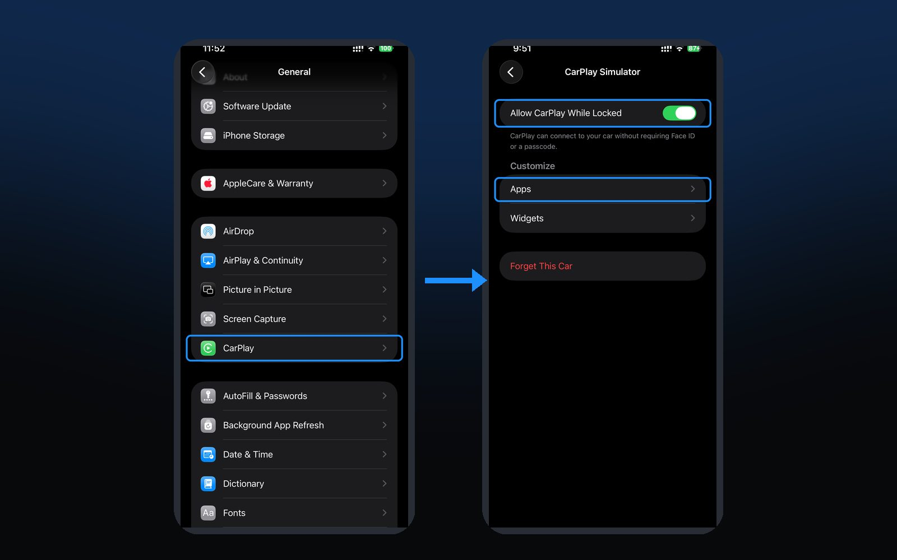

Como usar o Car.TV
Cada recurso, passo a passo, e como usar no carro.
Conteúdo
- Veja o tour
- Conectar ao CarPlay
- Primeiros passos
- TV ao vivo
- Guia de TV
- Biblioteca
- Meus vídeos
- Música
- Playlists
- Uma playlist
- O player
- Modo carro
- Salvos
- Navegador
- Transferência por Wi-Fi
- Ajustes
- Perguntas
Veja o tour
Conectar ao CarPlay
- Verifique seu carroO Car.TV mostra vídeo na tela do carro apenas em carros compatíveis com vídeo no CarPlay, com iOS 26.4 ou posterior. Outros carros reproduzem o som. Em Ajustes › Verificação do carro, você vê o que seu carro pode fazer.

- Com cabo ou sem fioConecte o iPhone à porta USB do CarPlay do carro com um cabo, ou use o CarPlay sem fio se o carro tiver.

- Ative o CarPlay no iPhoneAjustes › Geral › CarPlay › escolha seu carro. Ative “Permitir CarPlay Quando Bloqueado”.

- Encontre o Car.TV na tela do carroToque no Car.TV na tela de início do CarPlay. Não está lá? No iPhone: Ajustes › Geral › CarPlay › seu carro › Personalizar › Apps.

- Escolha o que assistirTV ao vivo, Meus vídeos, Música e Playlists ficam na tela do carro, como no celular.

- Vídeo com o carro paradoQuando o carro anda, o CarPlay para a imagem e o Car.TV mantém o som; o celular mostra “Tela do carro · só som”.

- Botões do volanteNa TV ao vivo, avançar e voltar mudam de canal. Desative em Ajustes › Reprodução.
- Passageiros: Modo carroNo celular, o Modo carro mostra blocos e botões grandes. Motorista, mantenha os olhos na estrada.

Primeiros passos
- Boas-vindas ao Car.TVSua TV ao vivo, filmes, vídeos e músicas, no iPhone, na TV e na tela do carro quando estacionado. Veja um tour de 1 minuto.
- Adicione tudo por aquiUma playlist IPTV (M3U), um portal Xtream, um servidor Jellyfin, Emby ou Plex, uma pasta na nuvem ou vídeos do Arquivos e do Fotos.
- Busque em tudoCanais, filmes, séries, seus vídeos e músicas.
- AjustesSuas fontes, Premium, idioma, Modo carro, controle parental e este guia.
- InícioContinue de onde parou: Continuar assistindo, No ar agora e Novidades na sua biblioteca.
- TV ao vivoTodos os canais, por país ou com filtros. Mantenha um canal pressionado para ver o guia e os Favoritos.
- BibliotecaPrimeiro o que é seu: Meus vídeos, Música e Playlists tocam offline. Filmes e Séries vêm das suas fontes.
- SalvosSeus favoritos e downloads, para quando não houver sinal.
- Ainda sem playlist?Experimente os canais de exemplo e abra filmes para ver como tudo funciona.
- O playerAbre em tela cheia. Deslize para baixo e ele continua tocando em uma barra pequena enquanto você navega.
- Traga seus arquivosEnvie vídeos e músicas de um computador com Transferência por Wi-Fi ou salve da web com o Navegador.
- Vai usar o Car.TV no carro?Veja passo a passo como conectar o CarPlay. Você pode rever este tour quando quiser em Ajustes › Como usar o Car.TV.
TV ao vivo

- Encontre um canalBusque qualquer canal pelo nome.
- Dois layouts, países, filtrosFaixas ou Linhas; canais por país; filtros por idioma, categoria e qualidade.
- Mantenha um canal pressionadoO guia, os Favoritos e Corrigir guia quando a programação estiver faltando.
Guia de TV
- Deslize pelo tempoToque em um programa no ar para assistir.
- Assista ao que perdeuProgramas já exibidos em canais com arquivo oferecem Assistir do começo.
Biblioteca
- Seus próprios arquivosMeus vídeos, Música e Playlists. Tocam offline, na estrada e no carro.
- Das suas fontesFilmes e séries das suas playlists e servidores. Filtre por fonte ou categoria e ordene.
- Busque nesta estanteBusca só na estante que você está vendo.
- A Biblioteca lembraEla abre na última estante que você usou.
Meus vídeos
- Mantenha um vídeo pressionadoReproduzir em seguida, Adicionar à playlist, Renomear, Escolher uma imagem, Mover para pasta, Compartilhar ou Apagar.
- Selecione váriosMova, coloque na fila ou apague vários vídeos de uma vez.
- Ordenar e visualizarPor data, nome, tamanho, duração ou última reprodução, em grade ou lista. O armazenamento também fica aqui.
- Adicionar vídeosDo Arquivos ou do Fotos, de um computador com Transferência por Wi-Fi ou da web.
Música
- Músicas, Álbuns, ArtistasNavegue pelas suas músicas do jeito que preferir.
- Deslize uma músicaPara a direita, adiciona a uma playlist. Para a esquerda, edita os detalhes ou apaga. Mantenha pressionado para Reproduzir em seguida.
- TimerA música para sozinha depois do tempo que você escolher.
Playlists
- Nova playlistMisture vídeos e músicas na ordem que quiser, para o banco de trás ou para a estrada.
- ImportarTraga uma playlist .m3u de outro app.
- Playlists inteligentesSempre atualizadas: adicionados recentemente, ainda não assistidos, vídeos curtos e mais.
Uma playlist

- Sua capaEscolha uma capa do Fotos ou um quadro de um vídeo: ⋯ › Capa.
- Reproduzir ou aleatórioA playlist inteira, offline quando tudo está neste dispositivo.
- Repetir, velocidade, apresentaçãoCada playlist guarda a própria repetição e velocidade. Adicione fotos e elas aparecem em tela cheia enquanto as músicas tocam.
- MaisAdicione vídeos ou músicas, edite detalhes, fixe, duplique, exporte como M3U. Arraste para reordenar; deslize para a esquerda para remover.
O player

- Toque na imagemMostra ou oculta os controles.
- Pule 15 segundosVolte ou avance 15 segundos; o botão do meio pausa.
- Imagem, som e maisAjustar, Preencher ou Zoom; faixa de áudio; legendas; velocidade; sincronia de A/V.
- Reproduza na TVAirPlay, Google Cast ou uma smart TV DLNA na sua rede Wi-Fi.
- Modo carroBotões grandes para os passageiros.
- Continue assistindoFeche ou deslize para baixo: continua tocando na barra pequena.
Modo carro

- Para os passageirosBlocos e botões grandes. Motorista, mantenha os olhos na estrada.
- Sair do Modo carroVolta para o app completo.
Salvos
- Favoritos e downloadsMantenha um canal pressionado ou abra um filme e toque em Adicionar a Salvos. Os downloads tocam sem sinal.
Navegador
- Busque ou digite um endereçoA página inicial guarda seus favoritos e os sites que você visita com frequência.
- AbasVárias páginas ao mesmo tempo e abas privadas que não guardam histórico.
- Salvar desta páginaSalve músicas e vídeos que você tem o direito de guardar. As músicas vão para Música e os vídeos, para Meus vídeos.
Transferência por Wi-Fi
- Inicie o servidorDepois abra o endereço mostrado em um computador na mesma rede Wi-Fi e solte seus arquivos.
- Mantenha esta tela abertaAs transferências param quando você sai desta tela. As músicas vão para Música e os vídeos, para Meus vídeos.
Ajustes
- Suas fontesAdicione, edite, atualize ou desative playlists e servidores.
- Este guiaReveja o tour, conecte o CarPlay e leia o guia no seu idioma.
Perguntas
Por que a tela do carro só toca o som enquanto dirijo?
É assim que o vídeo funciona no CarPlay, por segurança: a imagem só aparece com o carro estacionado. Quando o carro anda, o CarPlay para a imagem e o som continua. Nenhum app pode mudar isso.
O Car.TV não aparece na tela do meu carro. Por quê?
O Car.TV só aparece em carros compatíveis com vídeo no CarPlay, com iOS 26.4 ou posterior. Confira Ajustes › Geral › CarPlay › seu carro › Personalizar › Apps e veja Verificação do carro nos Ajustes do Car.TV.
O Car.TV vem com canais?
Não. O Car.TV reproduz o que você adiciona: uma playlist ou portal IPTV a que você tem acesso, seu servidor de mídia ou seus próprios vídeos e músicas. Experimente a playlist de exemplo para ver como funciona.
O que toca sem internet?
Tudo em Meus vídeos e Música, seus downloads e as playlists feitas com eles. A playlist avisa quando um item precisa de internet.
Como coloco meus vídeos e músicas no Car.TV?
Do Arquivos ou do Fotos com o botão +, de um computador com Transferência por Wi-Fi, por AirDrop ou pelo botão Compartilhar, ou da web com o Navegador.
Como faço uma playlist com apresentação de fotos?
Biblioteca › Playlists › Novo, adicione músicas e depois Adicionar apresentação e escolha as fotos. Reproduza a playlist e as fotos preenchem a tela enquanto as músicas tocam.
Minhas playlists aparecem nos meus outros dispositivos?
Sim, com o Premium e a Sincronização via iCloud ativada em Ajustes. Vídeos e músicas ficam no dispositivo em que foram adicionados, então a playlist em outro dispositivo mostra o que esse dispositivo tem.
O Car.TV coleta meus dados?
Não. Não há conta, anúncios nem rastreamento. Suas fontes, playlists e fotos ficam nos seus dispositivos e, se você ativar, no seu próprio iCloud.
Mais perguntas? Veja as perguntas frequentes →
Nunca assista a vídeos enquanto dirige. O CarPlay só mostra vídeo com o carro estacionado; ao dirigir, o motorista deve apenas ouvir.